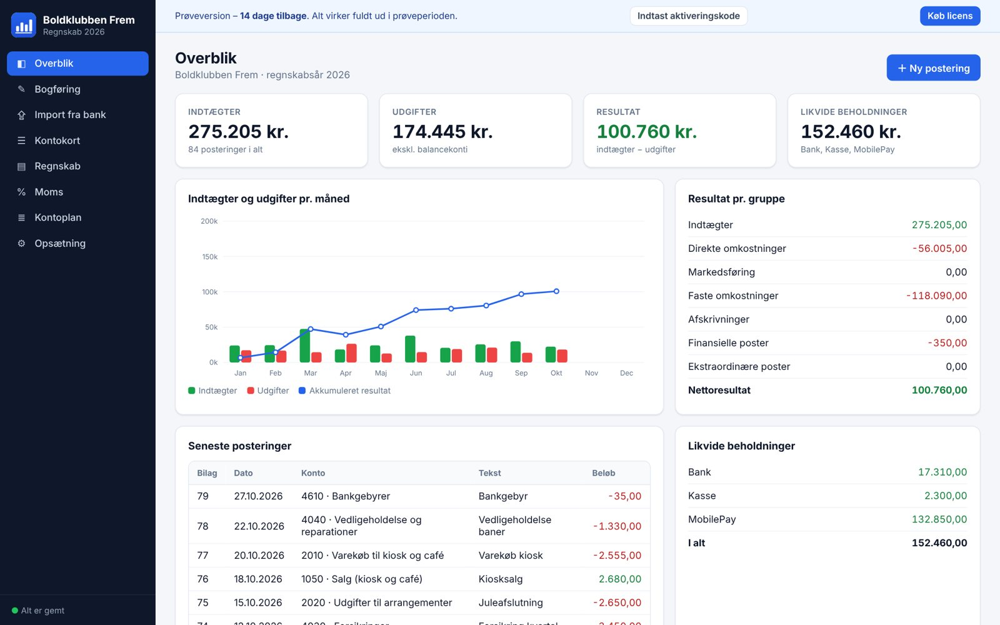
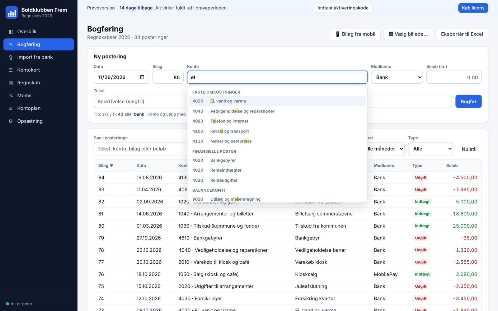
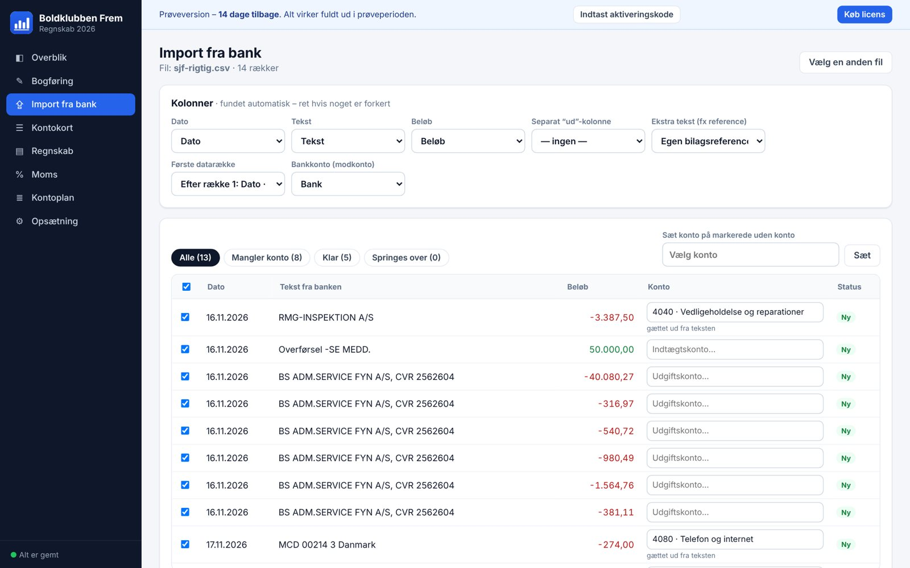
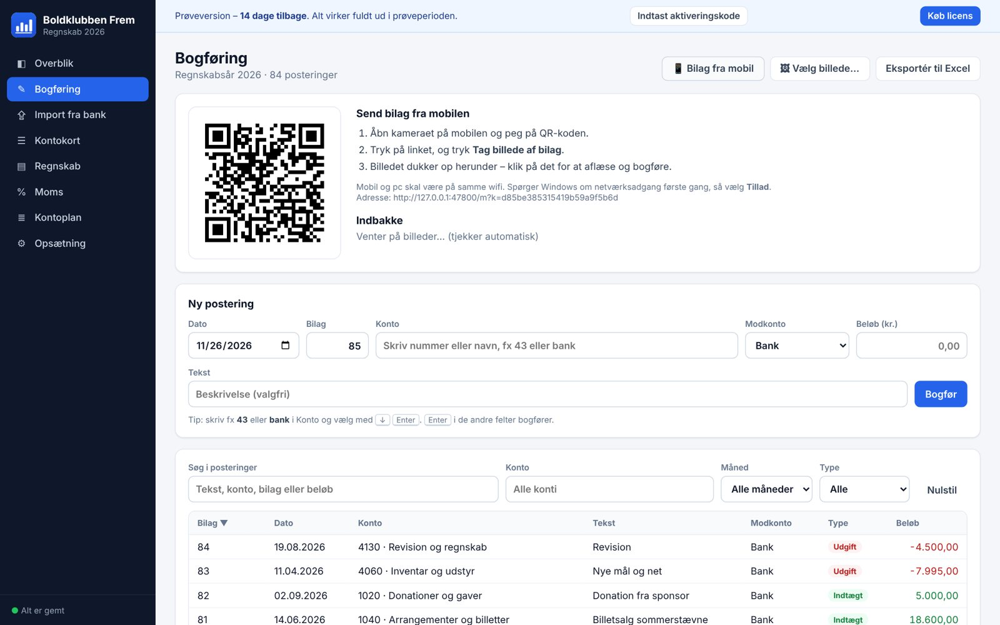
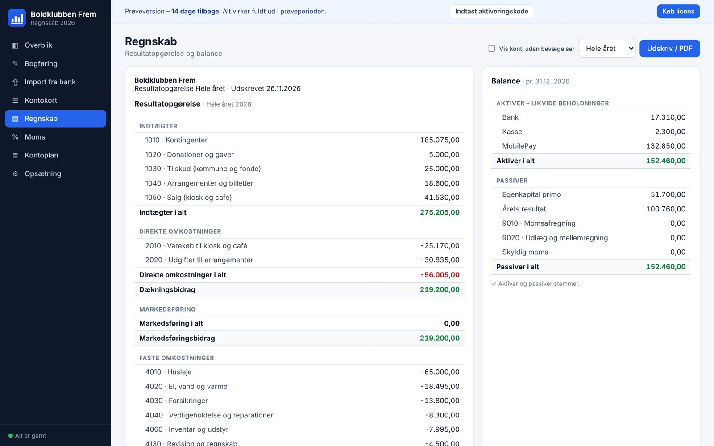

Seba Regnskab er et enkelt, dansk regnskabsprogram til foreninger og klubber. Bogfør på sekunder, hent kontoudtoget fra banken, tag billeder af bilag med mobilen – og få årsregnskabet klar til generalforsamlingen.
14 dages gratis prøveperiode · Ingen kreditkort · Windows 10 og 11
Bygget til frivillige kasserere, der vil have styr på økonomien uden at være bogholdere.
Skriv “kont” eller “43” – programmet finder kontoen. Enter bogfører, og næste postering er klar.
Indlæs kontoudtoget som CSV eller Excel. Programmet foreslår konti, springer dubletter over og husker dine valg.
Scan en QR-kode, tag et billede af kvitteringen – dato og beløb aflæses automatisk, og bilaget gemmes ved posteringen.
Resultatopgørelse og balance med ét klik – for hele året, et kvartal eller en måned. Udskriv eller gem som PDF.
Start med en kontoplan lavet til foreninger: kontingenter, tilskud, arrangementer, husleje, forsikringer m.m.
Ingen sky og intet abonnement på login. Alt gemmes lokalt med automatisk daglig sikkerhedskopi.
Ét skærmbillede til alt: dato, konto, beløb og tekst. Søg i alle posteringer, ret med et klik, og eksportér til Excel når revisoren spørger.

Træk filen fra netbanken ind i programmet. Dato, tekst og beløb findes automatisk, og hver linje får et kontoforslag. Du godkender, før noget bogføres.

Ingen app at installere. Scan QR-koden, tag billedet, og bilaget dukker op på pc'en med dato, beløb og et kontoforslag udfyldt.

Resultatopgørelse og balance med foreningens navn og logo. Udskriv eller gem som PDF og send til bestyrelse og revisor.

Ingen installation, ingen konto, intet bøvl.
Én licens dækker én forening på én computer. Alle priser er inkl. moms.
Aktiveringskoden sendes automatisk på e-mail lige efter betalingen. Indsæt den i programmet under “Indtast aktiveringskode”.
Kan du ikke finde svaret? Skriv til support@sebasoftware.com.
Windows 10 og Windows 11. Programmet bruger Microsoft Edge, som allerede følger med Windows. Det kræver ingen installation og ingen administrator-rettigheder.
På din egen computer i mappen Dokumenter\Seba Regnskab. Der laves automatisk en sikkerhedskopi hver dag, og du kan selv kopiere mappen til en USB-nøgle eller OneDrive. Vi har ikke adgang til dine data.
Programmet går i læsetilstand: du kan stadig se, udskrive og eksportere hele dit regnskab, men ikke bogføre nyt. Når du indtaster en aktiveringskode, fortsætter du præcis hvor du slap.
Det sker med nye programmer, der hentes fra internettet. Klik på “Flere oplysninger” og “Kør alligevel”. Du kan undgå beskeden ved at højreklikke på zip-filen, vælge Egenskaber, sætte flueben i “Fjern blokering” og derefter pakke den ud.
Ja. Hent kontoudtoget i netbanken som CSV eller Excel (.xlsx) og træk filen ind i programmet. Det virker med de almindelige danske netbanker, og du kan selv pege på kolonnerne, hvis din bank laver filen på en særlig måde.
Ja. Momskoden sættes pr. konto, og momsregnskabet beregner salgsmoms, købsmoms og rubrikkerne til momsangivelsen. Er foreningen ikke momsregistreret, kan du bare lade det være.
Ja. Kopiér mappen Dokumenter\Seba Regnskab til den nye computer, start programmet og indtast aktiveringskoden igen.